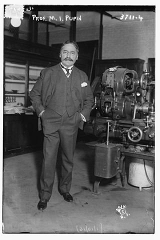

Pupin coils
|
Pupin's 1899 patent for loading coils, archaically called "Pupin coils", followed closely on the pioneering work of the English physicist and mathematician Oliver Heaviside, which predates Pupin's patent by some seven years. The importance of the patent was made clear when the American rights to it were acquired by American Telephone & Telegraph (AT&T), making him wealthy. Although AT&T bought Pupin's patent, they made little use of it, as they already had their own development in hand led by George Campbell and had up to this point been challenging Pupin with Campbell's own patent. AT&T were afraid they would lose control of an invention which was immensely valuable due to its ability to greatly extend the range of long distance telephones and especially submarine ones. |
|  |